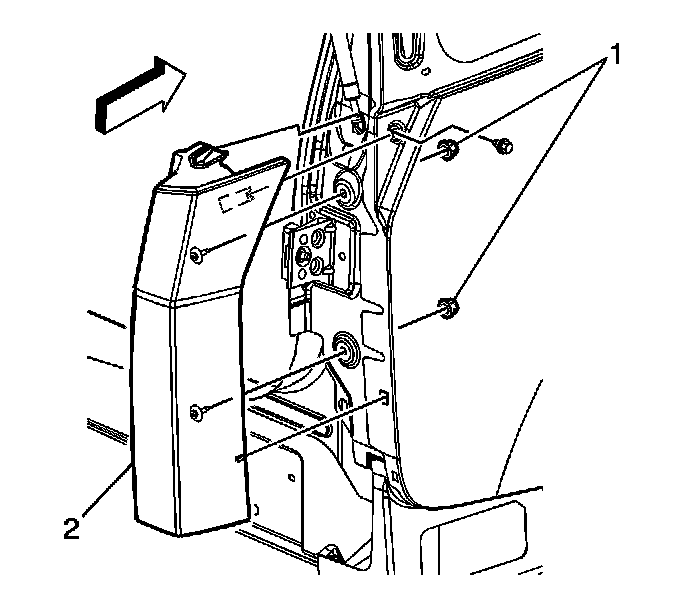

Tail Lamp: Service and Repair
Tail Lamp Replacement
Removal Procedure
1. Open the liftgate.
2. Remove the body side rear trim panel. Refer to Body Side Rear Trim Panel Replacement (w/TB5) (Service and Repair)Body Side Rear Trim Panel Replacement (w/o TB5) (Service and Repair) .
3. For the right side only, remove the rear speaker. Refer to Radio Rear Speaker Replacement (Console Cover) (Radio Rear Speaker Replacement (Console Cover))Radio Rear Speaker Replacement (Upper Pillar) (Radio Rear Speaker Replacement (Upper Pillar))Radio Rear Speaker Replacement (Outer) (Radio Rear Speaker Replacement (Outer)) .
4. For the left side only, remove the fasteners. Tilt the auxiliary blower motor outward to gain access to the nuts that secure the tail lamp. If equipped, reposition the liftgate close actuator motor control module to access the nuts that secure the tail lamp. Refer to Auxiliary Blower Motor Replacement (Service and Repair) and Liftgate Close Actuator Motor Control Module Replacement (Service and Repair) .
5. Remove the rear seat belt retractor. Refer to Seat Belt Retractor Replacement - No. 2 Rear (Seat Belt Retractor Replacement - No. 2 Rear) .

6. Remove the nuts (1) that secure the tail lamp (2) to the body.
7. Disconnect the tail lamp electrical connector.
8. Remove the tail lamp.
Installation Procedure
1. Install the tail lamp assembly.
2. Connect the tail lamp electrical connector
Notice: Refer to Fastener Notice (Fastener Notice) .
3. Install the nuts (1) that secure the tail lamp (2) to the body.
Tighten the tail lamp nuts to 6 N.m (53 lb in).
4. Install the rear seat belt retractor. Refer to Seat Belt Retractor Replacement - No. 2 Rear (Seat Belt Retractor Replacement - No. 2 Rear) .
5. For the right side only, install the rear speaker. Refer to Radio Rear Speaker Replacement (Console Cover) (Radio Rear Speaker Replacement (Console Cover))Radio Rear Speaker Replacement (Upper Pillar) (Radio Rear Speaker Replacement (Upper Pillar))Radio Rear Speaker Replacement (Outer) (Radio Rear Speaker Replacement (Outer)) .
6. For the left side only, install the auxiliary blower motor. Refer to Auxiliary Blower Motor Replacement (Service and Repair) .
7. For the left side only, install the liftgate close actuator motor control module. Refer to Liftgate Close Actuator Motor Control Module Replacement (Service and Repair) .
8. Install the body side rear trim panel. Refer to Body Side Rear Trim Panel Replacement (w/TB5) (Service and Repair)Body Side Rear Trim Panel Replacement (w/o TB5) (Service and Repair) .
9. Close the liftgate.